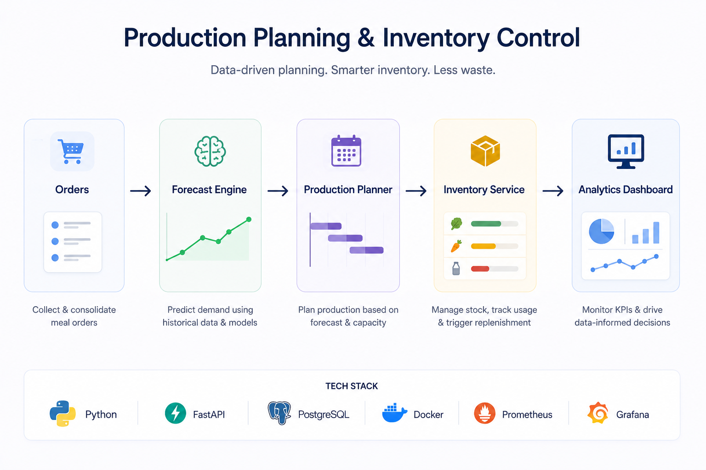
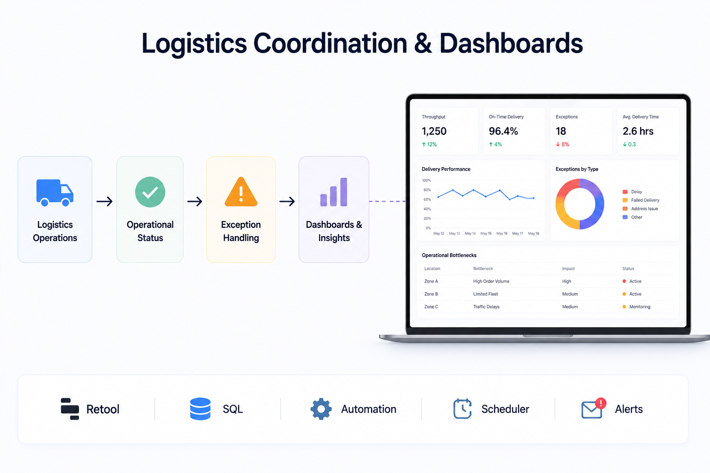

Corporate meal delivery operations, planning automation, traceability, logistics, and dashboards.
Overview
At ChefCoco, I built and improved operational processes for a corporate meal delivery platform, covering production planning, inventory management, order tracking, QR-based traceability, logistics coordination, and performance dashboards. The focus was on streamlining workflows through automation and data-driven decision-making to improve efficiency and reduce food waste.

Production Planning & Inventory Control
- Improved production planning workflows to align kitchen output with daily corporate meal demand
- Built operational processes for inventory tracking, replenishment visibility, and stock accuracy
- Reduced waste by using data to connect meal forecasts, ingredient usage, and production decisions

Logistics Coordination & Dashboards
- Supported logistics coordination with clearer operational status and exception handling workflows
- Built dashboards to track throughput, delivery performance, and operational bottlenecks
- Used Retool, SQL, and automation-oriented tooling to turn operational data into daily decision support
Reference
ChefCoco reflects hands-on operational improvement work at the intersection of delivery execution, data, and automation.